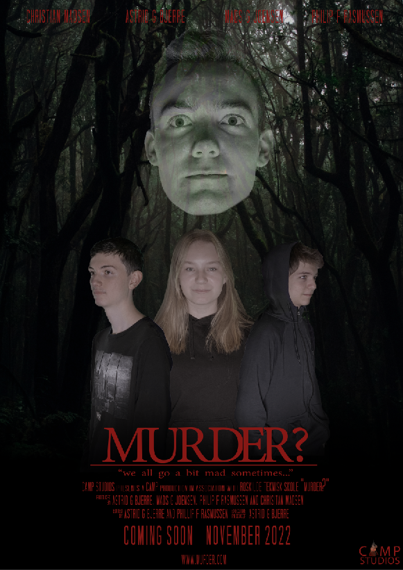

Murder?
Murder? er en film omkring 3 personer som er inde på en skole sammen med en ukendt morder. Efter skole opdager de at de er låst inde på skolen.
Filmen har allerede vundet mange ting og præmier fra vores studie sted, bare fra traileren.
Filmen er ikke baseret på rigtige hændelser, men har taget inspiration fra virkeligheden.
Da filmen indholder nogle voldsome scener vil vi ikke anbefale at vise filmen til børn under 13 år.
- Censur: Tilladt for alle over 13 år
- Filmlængde: 1 time og 37 min
- Udgivelsesdato: 5. oktober 2029
- genre: Gyser
- Skuespillere:
Mads Gjødsøl Jørgensen, Christian Madsen, Philip Frede Rasmussen og Astrid Bjerre